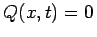
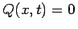

Inhalt Index DeskTop Bronstein

 Differentialgleichungen Partielle Differentialgleichungen Partielle Differentialgleichungen aus Naturwissenschaft und Technik Wärmeleitungs- und Diffusionsgleichung für ein homogenes Medium
Differentialgleichungen Partielle Differentialgleichungen Partielle Differentialgleichungen aus Naturwissenschaft und Technik Wärmeleitungs- und Diffusionsgleichung für ein homogenes Medium


Die Ausbreitung der Wärme in einem homogenen Medium wird durch die lineare partielle Differentialgleichung zweiter Ordnung vom parabolischen Typ
beschrieben, wobei  der LAPLACE-Operator ist, hier beschränkt auf maximal drei Ausbreitungsrichtungen , beschreibbar auch durch den Ortsvektor . Wenn der Wärmestrom weder Quellen noch Senken besitzt, verschwindet die rechte Seite wegen .
der LAPLACE-Operator ist, hier beschränkt auf maximal drei Ausbreitungsrichtungen , beschreibbar auch durch den Ortsvektor . Wenn der Wärmestrom weder Quellen noch Senken besitzt, verschwindet die rechte Seite wegen .
Das CAUCHYsche Problem kann folgendermaßen gestellt werden: Es ist eine für t > 0 beschränkte Lösung u(x,t) zu suchen, wobei u|t=0=f(x) sein soll. Die Forderung nach der Beschränktheit sichert gleichzeitig die Eindeutigkeit der Lösung.
Für die homogene Differentialgleichung mit Q(x,t) = 0 erhält man die Wellenfunktion